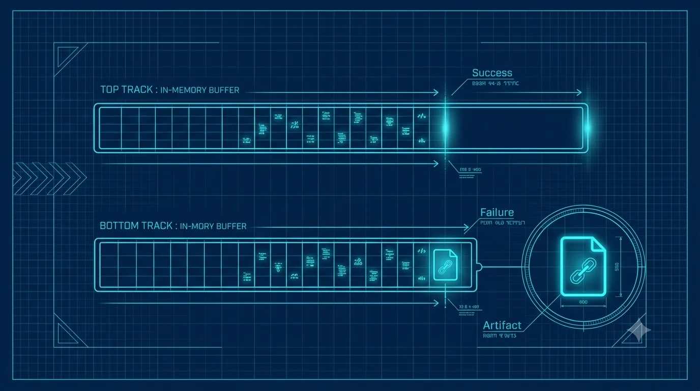

Chapter 01
The Idea: Discard Success, Commit Failure
Before you install anything, get the one idea LinkLog is built on. It is not a logger, not a tracing library, and not an APM agent. It is a bet: the only execution context worth keeping is the context of a request that failed — so record everything, keep nothing on success, and commit a forensic checkpoint only when something breaks.
The cost of "log everything" is why this exists
The usual deal in observability is that richer context costs more all the time. Every debug log line, every span attribute, every captured variable is paid for on every request — the 99.9% that succeed and the 0.1% that don't. So teams turn the detail down to afford the volume, and then a real incident arrives with exactly the fields they trimmed away.
LinkLog inverts the trade. It records generously — arguments, intermediate state, the shape of the call graph — into an invisible in-memory buffer. On the success path that buffer is discarded, and the discard is so cheap it does not register on a budget of one millisecond per request. You only pay to keep anything the moment a request actually fails.
A successful request leaves no trace on disk, ever. There is nothing to sample, rotate, or bill for. The artifact directory stays empty until the moment a request fails — and that emptiness is the feature.
The "intent vs. error" gap
Here is the thing traditional tools lose. A stack trace tells you where the interpreter was when it raised. It does not tell you what the code was trying to do, or the two steps it completed successfully first. LinkLog captures both ends of that gap: the intent — the business purpose you declared — and the error, wherever it actually happened, however many scopes down.
Take a refund flow. The intent is ProcessRefund. It validates the card (fine), charges the gateway (fine), and dies settling the ledger three steps later with a ZeroDivisionError. A log line says "ZeroDivisionError at ledger.py:88". A LinkLog checkpoint says: the goal was to process a refund; validation passed with these inputs; the gateway returned this response; and then settlement divided by a zero retry-count. That is the difference between a symptom and a story.

A minimalist editorial diagram in cyan-on-navy blueprint style: two parallel tracks. Top track shows an in-memory buffer filling with small event marks then vanishing into nothing — success. Bottom track shows the same buffer filling, then a bright cyan artifact file icon hard-linked out and preserved — failure. Thin technical linework, drafting-grid background. No readable words baked in. ~1280×720px, 16:9, centred with safe margins.
Generate this with your image agent, then drop the file here.
What lives in a checkpoint
A checkpoint is not a flat log. It is a small causality graph — a directed tree of events, each pointing at its parent. You build it implicitly, with three primitives you'll meet in Chapter 3:
intent— the business purpose. The root of the graph, one per request.scope— a logical step inside the intent (validate, charge, settle). Scopes nest; the graph's branches are your call structure.snapshot— a labelled value captured under the current step (an argument, a response, a computed total).
When a failure is committed, LinkLog appends an error event and the structured stack frames, then seals the artifact. The reader downstream reconstructs the whole tree in a single pass — so what you get is not "a line at a timestamp" but "this goal, these steps, this state, this failure, and exactly where in the tree it sat."
On Linux the buffer is an O_TMPFILE in /dev/shm — a real file with no name. Discard on success is a single close(); the kernel reclaims the pages. Keeping one on failure is a metadata-only hard link into a watched directory. No bytes are copied to save a failure. Chapter 2 shows it running; Chapter 5 covers the one case anonymous buffers can't see.
So it replaces my logs?
No — it complements them. Keep your logs and metrics for the aggregate view: rates, dashboards, "is the service healthy right now." LinkLog is the opposite lens: deep context for the individual request that broke, and silence for everything else. You reach for it when a log line tells you that something failed and you need to know why, with the state that caused it still attached.
Next, we put this on disk: install the SDK, initialise it, wrap one function, and watch a .llog artifact appear the instant it fails — and never appear when it succeeds.